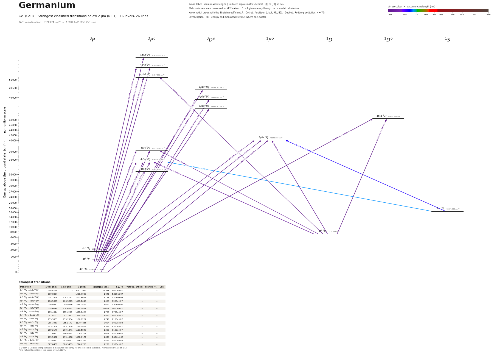

Germanium energy level diagram
Energy levels and transitions of neutral germanium (Ge I): the 26 strongest classified lines below 2 µm from the NIST Atomic Spectra Database and the 16 levels they connect, each line with its vacuum wavelength, frequency and, for 26 of them, the reduced dipole matrix element derived from the NIST transition rate. Lifetimes, hyperfine constants and isotope shifts from the literature have not been compiled for this element yet.
Hover a line or a level to isolate it, click to keep it selected. Scroll to zoom, drag to move.

Download: diagram (PDF) diagram (SVG) transitions (CSV) levels (CSV) source code

Strongest transitions of germanium
| Transition | λ vac (nm) | λ air (nm) | ν (THz) | |⟨J‖er‖J′⟩| (ea₀) | A (s⁻¹) | Γ/2π up. (MHz) | branch (%) | Use |
|---|---|---|---|---|---|---|---|---|
| 4p2 3P1 – 4p4d 3P°0 | 194.4730 | – | 1541.5633 | 0.504 | 7.000e+07 | – | – | |
| 4p2 3P2 – 4p4d 3P°2 | 199.8887 | – | 1499.7969 | 1.041 | 5.500e+07 | – | – | |
| 4p2 3P0 – 4p4d 3D°1 | 204.2368 | 204.1712 | 1467.8673 | 1.178 | 1.100e+08 | – | – | |
| 4p2 3P1 – 4p4d 3D°1 | 206.5875 | 206.5215 | 1451.1648 | 1.053 | 8.500e+07 | – | – | |
| 4p2 3P1 – 4p4d 3D°2 | 206.9317 | 206.8656 | 1448.7509 | 1.620 | 1.200e+08 | – | – | |
| 4p2 3P1 – 4p4d 1D°2 | 208.6684 | 208.6021 | 1436.6928 | 0.947 | 4.000e+07 | – | – | |
| 4p2 3P2 – 4p4d 3D°3 | 209.4924 | 209.4258 | 1431.0424 | 1.755 | 9.700e+07 | – | – | |
| 4p2 1D2 – 4p4d 1D°2 | 241.8102 | 241.7367 | 1239.7842 | 1.830 | 9.600e+07 | – | – | |
| 4p2 3P1 – 4p5s 3P°2 | 259.3309 | 259.2534 | 1156.0227 | 1.748 | 7.100e+07 | – | – | |
| 4p2 3P2 – 4p5s 3P°2 | 265.1961 | 265.1172 | 1130.4556 | 3.034 | 2.000e+08 | – | – | |
| 4p2 3P0 – 4p5s 3P°1 | 265.2358 | 265.1568 | 1130.2867 | 1.532 | 8.500e+07 | – | – | |
| 4p2 3P1 – 4p5s 3P°1 | 269.2140 | 269.1341 | 1113.5842 | 1.328 | 6.100e+07 | – | – | |
| 4p2 3P1 – 4p5s 3P°0 | 271.0427 | 270.9624 | 1106.0709 | 1.659 | 2.800e+08 | – | – | |
| 4p2 3P2 – 4p5s 3P°1 | 275.5402 | 275.4588 | 1088.0171 | 1.846 | 1.100e+08 | – | – | |
| 4p2 1D2 – 4p5s 1P°1 | 303.9952 | 303.9067 | 986.1751 | 3.413 | 2.800e+08 | – | – | |
| 4p2 1D2 – 4p5s 3P°1 | 327.0431 | 326.9489 | 916.6756 | 1.226 | 2.900e+07 | – | – |
λ, ν from NIST level energies unless a measured frequency for this isotope is available. A: measured value or NIST. Γ/2π: natural linewidth of the upper level, 1/(2πτ).
Listed Ge transitions below 2 µm
| Lower level | Upper level | λ vacuum (nm) | λ air (nm) | ν (THz) | Type | |⟨J‖er‖J′⟩| (ea₀) | A (s⁻¹) | Branching (%) | Source of matrix element / A |
|---|---|---|---|---|---|---|---|---|---|
| 4p2 3P1 | 4p4d 3P°0 | 194.4730 | – | 1541.5633 | E1 | 0.504 NIST | 7.000e+07 NIST | – | NIST ASD (accuracy C) |
| 4p2 3P1 | 4p4d 3P°1 | 195.5115 | – | 1533.3750 | E1 | 0.557 NIST | 2.800e+07 NIST | – | NIST ASD (accuracy C) |
| 4p2 3P2 | 4p4d 3P°1 | 198.8267 | – | 1507.8079 | E1 | 0.539 NIST | 2.500e+07 NIST | – | NIST ASD (accuracy C) |
| 4p2 3P2 | 4p4d 3P°2 | 199.8887 | – | 1499.7969 | E1 | 1.041 NIST | 5.500e+07 NIST | – | NIST ASD (accuracy C) |
| 4p2 3P0 | 4p4d 3D°1 | 204.2368 | 204.1712 | 1467.8673 | E1 | 1.178 NIST | 1.100e+08 NIST | – | NIST ASD (accuracy C) |
| 4p2 3P1 | 4p4d 3D°1 | 206.5875 | 206.5215 | 1451.1648 | E1 | 1.053 NIST | 8.500e+07 NIST | – | NIST ASD (accuracy C) |
| 4p2 3P1 | 4p4d 3D°2 | 206.9317 | 206.8656 | 1448.7509 | E1 | 1.620 NIST | 1.200e+08 NIST | – | NIST ASD (accuracy C) |
| 4p2 3P1 | 4p4d 1D°2 | 208.6684 | 208.6021 | 1436.6928 | E1 (intercombination) | 0.947 NIST | 4.000e+07 NIST | – | NIST ASD (accuracy C) |
| 4p2 3P2 | 4p4d 3D°3 | 209.4924 | 209.4258 | 1431.0424 | E1 | 1.755 NIST | 9.700e+07 NIST | – | NIST ASD (accuracy C) |
| 4p2 3P2 | 4p4d 3D°2 | 210.6491 | 210.5824 | 1423.1838 | E1 | 0.626 NIST | 1.700e+07 NIST | – | NIST ASD (accuracy C) |
| 4p2 1D2 | 4p4d 3P°2 | 225.6699 | 225.6001 | 1328.4554 | E1 (intercombination) | 0.301 NIST | 3.200e+06 NIST | – | NIST ASD (accuracy C) |
| 4p2 1D2 | 4p4d 1D°2 | 241.8102 | 241.7367 | 1239.7842 | E1 | 1.830 NIST | 9.600e+07 NIST | – | NIST ASD (accuracy C) |
| 4p2 3P0 | 4p5s 1P°1 | 249.8716 | 249.7962 | 1199.7862 | E1 (intercombination) | 0.548 NIST | 1.300e+07 NIST | – | NIST ASD (accuracy C) |
| 4p2 3P1 | 4p5s 1P°1 | 253.3992 | 253.3230 | 1183.0838 | E1 (intercombination) | 0.491 NIST | 1.000e+07 NIST | – | NIST ASD (accuracy C) |
| 4p2 3P2 | 4p5s 1P°1 | 258.9962 | 258.9188 | 1157.5167 | E1 (intercombination) | 0.362 NIST | 5.100e+06 NIST | – | NIST ASD (accuracy C) |
| 4p2 3P1 | 4p5s 3P°2 | 259.3309 | 259.2534 | 1156.0227 | E1 | 1.748 NIST | 7.100e+07 NIST | – | NIST ASD (accuracy C) |
| 4p2 3P2 | 4p5s 3P°2 | 265.1961 | 265.1172 | 1130.4556 | E1 | 3.034 NIST | 2.000e+08 NIST | – | NIST ASD (accuracy C) |
| 4p2 3P0 | 4p5s 3P°1 | 265.2358 | 265.1568 | 1130.2867 | E1 | 1.532 NIST | 8.500e+07 NIST | – | NIST ASD (accuracy C) |
| 4p2 3P1 | 4p5s 3P°1 | 269.2140 | 269.1341 | 1113.5842 | E1 | 1.328 NIST | 6.100e+07 NIST | – | NIST ASD (accuracy C) |
| 4p2 3P1 | 4p5s 3P°0 | 271.0427 | 270.9624 | 1106.0709 | E1 | 1.659 NIST | 2.800e+08 NIST | – | NIST ASD (accuracy C) |
| 4p2 3P2 | 4p5s 3P°1 | 275.5402 | 275.4588 | 1088.0171 | E1 | 1.846 NIST | 1.100e+08 NIST | – | NIST ASD (accuracy C) |
| 4p2 1D2 | 4p5s 1P°1 | 303.9952 | 303.9067 | 986.1751 | E1 | 3.413 NIST | 2.800e+08 NIST | – | NIST ASD (accuracy C) |
| 4p2 1D2 | 4p5s 3P°2 | 312.5723 | 312.4817 | 959.1141 | E1 (intercombination) | 0.483 NIST | 3.100e+06 NIST | – | NIST ASD (accuracy C) |
| 4p2 1D2 | 4p5s 3P°1 | 327.0431 | 326.9489 | 916.6756 | E1 (intercombination) | 1.226 NIST | 2.900e+07 NIST | – | NIST ASD (accuracy C) |
| 4p2 1S0 | 4p5s 1P°1 | 422.7753 | 422.6563 | 709.1059 | E1 | 1.533 NIST | 2.100e+07 NIST | – | NIST ASD (accuracy C) |
| 4p2 1S0 | 4p5s 3P°1 | 468.7140 | 468.5828 | 639.6064 | E1 (intercombination) | 1.204 NIST | 9.500e+06 NIST | – | NIST ASD (accuracy C) |
Reduced dipole matrix elements follow the convention A = ω³|d|²/(3πε₀ħc³(2J′+1)), with J′ the upper level. Tags show where a number comes from: measured, NIST compilation, high-accuracy theory, or a model calculation.
Ge energy levels
| Level | Energy (cm⁻¹) | J | Parity | Lifetime | gJ | Hyperfine A (MHz) | Hyperfine B (MHz) | Lifetime source | Hyperfine source |
|---|---|---|---|---|---|---|---|---|---|
| 4p2 3P0 | 0.000 | 0 | even | stable | – | – | – | – | – |
| 4p2 3P1 | 557.134 | 1 | even | – | 1.5011 | – | – | – | – |
| 4p2 3P2 | 1409.961 | 2 | even | – | 1.4946 | – | – | – | – |
| 4p2 1D2 | 7125.299 | 2 | even | – | 1.0064 | – | – | – | – |
| 4p2 1S0 | 16367.333 | 0 | even | – | – | – | – | – | – |
| 4p5s 3P°0 | 37451.689 | 0 | odd | – | – | – | – | – | – |
| 4p5s 3P°1 | 37702.305 | 1 | odd | – | 1.435 | – | – | – | – |
| 4p5s 3P°2 | 39117.902 | 2 | odd | – | 1.5 | – | – | – | – |
| 4p5s 1P°1 | 40020.560 | 1 | odd | – | 1.068 | – | – | – | – |
| 4p4d 1D°2 | 48480.048 | 2 | odd | – | 0.981 | – | – | – | – |
| 4p4d 3D°2 | 48882.263 | 2 | odd | – | 1.008 | – | – | – | – |
| 4p4d 3D°1 | 48962.783 | 1 | odd | – | 0.556 | – | – | – | – |
| 4p4d 3D°3 | 49144.397 | 3 | odd | – | 1.24 | – | – | – | – |
| 4p4d 3P°2 | 51437.802 | 2 | odd | – | 1.46 | – | – | – | – |
| 4p4d 3P°1 | 51705.020 | 1 | odd | – | 1.391 | – | – | – | – |
| 4p4d 3P°0 | 51978.150 | 0 | odd | – | – | – | – | – | – |
Ge⁺ ionisation limit 63713.24 cm⁻¹ = 7.89943 eV (156.953 nm)
Sources
Atoms with measured data
- Lithium-632 levels, 85 lines
- Lithium-732 levels, 85 lines
- Beryllium-915 levels, 24 lines
- Sodium-2336 levels, 106 lines
- Magnesium-2418 levels, 61 lines
- Magnesium-2518 levels, 61 lines
- Potassium-3934 levels, 84 lines
- Potassium-4034 levels, 84 lines
- Potassium-4134 levels, 84 lines
- Calcium-4035 levels, 61 lines
- Calcium-4335 levels, 61 lines
- Rubidium-8536 levels, 94 lines
- Rubidium-8736 levels, 94 lines
- Strontium-8740 levels, 70 lines
- Strontium-8840 levels, 70 lines
- Caesium-13331 levels, 79 lines
- Barium-13744 levels, 89 lines
- Barium-13844 levels, 89 lines
- Dysprosium-16339 levels, 55 lines
- Dysprosium-16439 levels, 55 lines
- Ytterbium-17118 levels, 26 lines
- Ytterbium-17418 levels, 26 lines